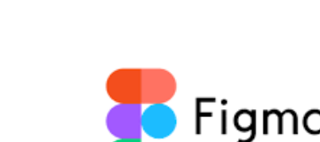
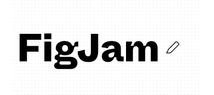
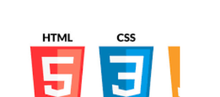
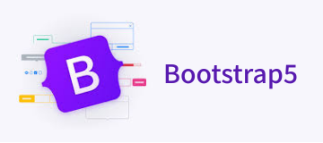
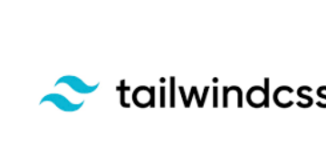
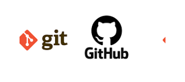

精通設計與切版技能

設計
- - 使用 figma 繪製 wireframe、mockup、prototype
- - 使用 figJam 整理歸納需求，繪製 functional map、user flow



切版
- - 精通 HTML、CSS 程式語言將設計稿製作成靜態網站
- - 擅長使用 Bootstrap 、Tailwind CSS 等框架客製化應用在專案上
- - 使用 Git、Github 做版本管理與工程交付



